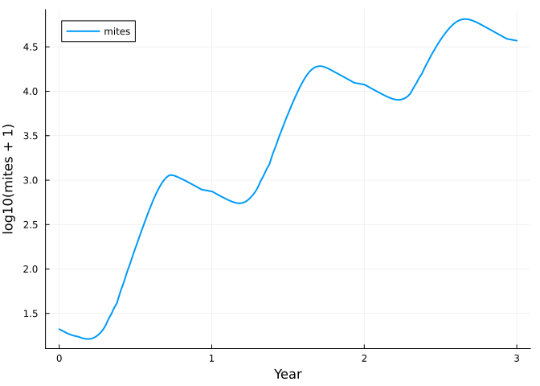
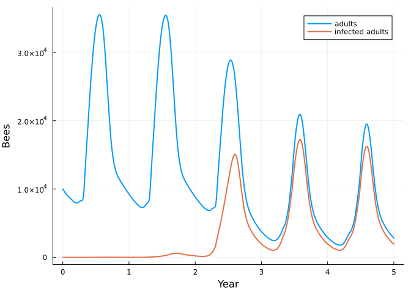
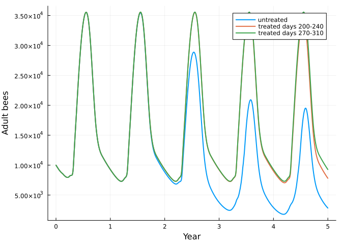

Bees 2: Varroa mites and deformed wing virus
Simon Frost
- Mites are a two-stage net
- Bees and mites meet through pools
- The virus is a stratum
- Treatment, and its timing
- What is provisional
- References
ENV["GKSwstype"] = "100"
using MatrixCommunityModels
using PlotsThe previous vignette built a honey bee colony. This one adds the mite Varroa destructor as a second species, and then deformed wing virus (DWV) as a second stratum of both species.
Mites are a two-stage net
A mite is either on an adult bee (phoretic) or in a capped brood cell, where it stays for the 12 days until the bee emerges and then leaves with its daughters.
q = VARROA_PARAMETERS
mite_life = ValuedProjectionNet([:phoretic, :cell],
:waiting => [(:phoretic => :phoretic) => 1.0],
:invading => [(:phoretic => :cell) => 1.0],
:leaving => [(:cell => :phoretic) => 1 - q.emergence_loss],
:daughters => [(:cell => :phoretic) => q.offspring * (1 - q.emergence_loss)])
stage_names(expand_stage(mite_life, :cell, 12))13-element Vector{Symbol}:
:phoretic
:cell1
:cell2
:cell3
:cell4
:cell5
:cell6
:cell7
:cell8
:cell9
:cell10
:cell11
:cell12varroa() is this net with three responses. The important one is invading: the fraction of phoretic mites entering cells each day depends on how many cells are being capped and how many adult bees there are, 1 - exp(-0.56 × cells capped / grams of adult bees) (Boot et al. 1995; Calis et al. 1999).
Bees and mites meet through pools
The mite never refers to the bee, or the bee to the mite. The bee reports three numbers as pools, and the mite reads them.
c = community(honeybee(), varroa())
pool_names(c)4-element Vector{Symbol}:
:adult_bees
:capping
:emerging
:phoreticcapping is the number of larvae about to be capped, adult_bees the number of adults, emerging the number of pupae about to emerge, and phoretic the number of mites on adults.
sol = project(c, honeybee_state(c; mites = 20), 1:(365 * 3))
years = sol.t ./ 365
mites = abundance(sol, :varroa)
adults(s) = stage_total(s, :honeybee, [:hive, :forager])
plot(years, log10.(mites .+ 1); label = "mites", xlabel = "Year", ylabel = "log10(mites + 1)", lw = 2)
(growth_per_day = round(log(mites[211] / mites[151]) / 60; digits = 4), fold_in_first_year = round(mites[366] / 20; digits = 1))(growth_per_day = 0.0193, fold_in_first_year = 16.6)Martin (1998) reports 0.021 per day while there is brood and a 12-fold increase a year; the proportion of mites lost at emergence was set to bring the model close to that. Drone brood, which mites prefer and in which they produce more daughters, is not modelled.
In this model mites alone do not harm the bees, following BEEHAVE, in which all damage comes through viruses:
alone = project(honeybee(), honeybee_state(honeybee()), 1:(365 * 3))
maximum(abs.(adults(sol) .- adults(alone)))0.0The virus is a stratum
DWV divides bees and mites into those without and with the virus. That is a stratification of each life cycle, not a new model: every stage and transition is replicated, and a coupling says which transitions can cross from one stratum to the other.
healthy_only = honeybee()
with_virus = honeybee(virus = true)
length(stage_names(healthy_only, :honeybee)), length(stage_names(with_virus, :honeybee))(24, 46)filter(t -> occursin("_to_", String(t)), transition_names(system(with_virus)[:honeybee]))4-element Vector{Symbol}:
:capping_healthy_to_infected
:foraging_healthy_to_infected
:hive_life_healthy_to_infected
:recruiting_healthy_to_infectedA larva crosses at capping, if a mite carrying the virus enters its cell; adults could also cross by mouth (used in the last vignette). The responses that differ for infected bees are attached to the transitions of the infected stratum: a fifth of infected pupae die or emerge deformed, and infected adults die three times as fast in the hive. Mites are stratified the same way (clean, viral): a clean mite becomes viral by sharing a cell with an infected pupa or by feeding on infected adults, and stays viral.
function colony(; treatment = day -> 0.0, years = 5)
c = community(honeybee(virus = true), varroa(virus = true, treatment = treatment))
project(c, honeybee_state(c; mites = 20, viral = 0.1), 1:(365 * years))
end
untreated = colony()
infected(s) = stage_total(s, :honeybee, [:hive_infected, :forager_infected])
plot(untreated.t ./ 365, [adults(untreated) infected(untreated)]; label = ["adults" "infected adults"],
xlabel = "Year", ylabel = "Bees", lw = 2)
For two years little happens. In the third autumn, when mites are numerous and brood is scarce, most of the bees that will form the winter cluster are infected as pupae. They die early, and the colony goes into each following winter with a few thousand bees.
winters = 365 .* (1:5) .+ 1
[(year = y, adults = round(Int, adults(untreated)[w]), mites_per_100_bees = round(100 * stage_total(untreated, :varroa, :phoretic)[w] / adults(untreated)[w]; digits = 1),
infected = round(infected(untreated)[w] / adults(untreated)[w]; digits = 2)) for (y, w) in enumerate(winters)]5-element Vector{@NamedTuple{year::Int64, adults::Int64, mites_per_100_bees::Float64, infected::Float64}}:
(year = 1, adults = 9255, mites_per_100_bees = 3.6, infected = 0.0)
(year = 2, adults = 8557, mites_per_100_bees = 64.9, infected = 0.04)
(year = 3, adults = 3772, mites_per_100_bees = 706.9, infected = 0.52)
(year = 4, adults = 3366, mites_per_100_bees = 758.2, infected = 0.56)
(year = 5, adults = 3368, mites_per_100_bees = 738.2, infected = 0.56)A colony of fewer than about 4,000 bees is usually taken not to survive the winter (BEEHAVE; Kielmanowicz et al. 2015), so this colony is effectively lost in its third or fourth winter. Field studies put the autumn load of colonies that died at about 15 mites per 100 bees against 3 in survivors (Genersch et al. 2010).
Treatment, and its timing
A treatment is an extra mortality of phoretic mites over a window of days. Two windows of 40 days, each year:
late = colony(treatment = day -> 270 <= day < 310 ? 0.115 : 0.0)
early = colony(treatment = day -> 200 <= day < 240 ? 0.115 : 0.0)
plot(untreated.t ./ 365, [adults(untreated) adults(early) adults(late)];
label = ["untreated" "treated days 200-240" "treated days 270-310"], xlabel = "Year", ylabel = "Adult bees", lw = 2)
[(treatment = name, winter_5_adults = round(Int, adults(s)[winters[5]]), mites = round(Int, abundance(s, :varroa)[winters[5]]))
for (name, s) in (("none", untreated), ("days 200-240", early), ("days 270-310", late))]3-element Vector{@NamedTuple{treatment::String, winter_5_adults::Int64, mites::Int64}}:
(treatment = "none", winter_5_adults = 3368, mites = 24870)
(treatment = "days 200-240", winter_5_adults = 6049, mites = 5487)
(treatment = "days 270-310", winter_5_adults = 9272, mites = 0)Treating in October, when there is no brood for the mites to hide in, removes nearly all of them and keeps the colony healthy. The same treatment in late July and August kills only the mites on adults at the time; those in cells survive it, and the population recovers enough to cause damage within a few years. (Field advice is to treat before the winter bees are reared; in this model the absence of brood matters more, which may reflect its lack of drone brood and of mites arriving from other colonies.)
What is provisional
The mite and virus parameters are taken from Martin (1998, 2001) and BEEHAVE as summarised in reviews; the primary papers were not available when this was written, and only the mite growth rate was checked against the original abstract. They are listed in VARROA_PARAMETERS and HONEYBEE_PARAMETERS. The rate at which mites acquire virus from adult bees, and the effect of several mites sharing a cell, are assumptions.
References
Martin, S. J. (1998). Ecological Modelling 109, 267-281; (2001) Journal of Applied Ecology 38, 1082-1093. Becher, M. A. et al. (2014). Journal of Applied Ecology 51, 470-482. Genersch, E. et al. (2010). Apidologie 41, 332-352.